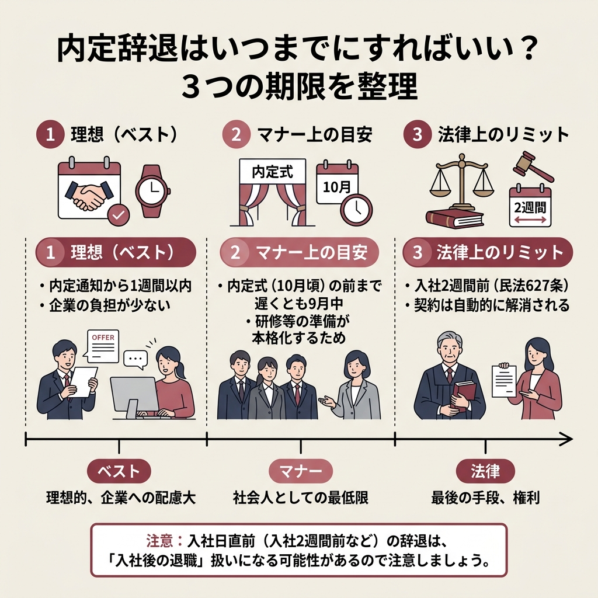
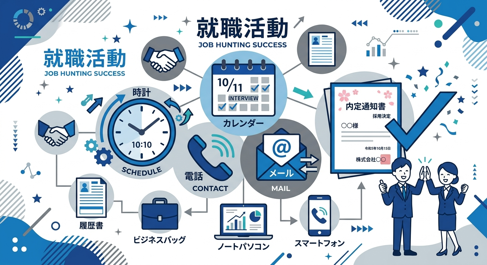
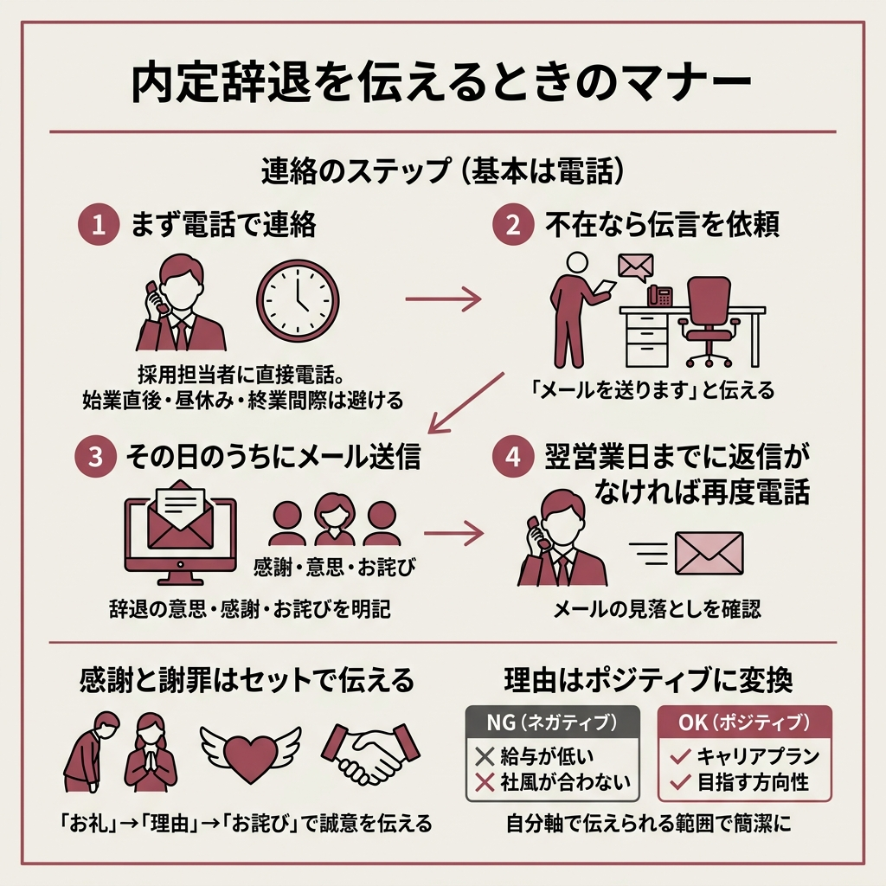

「内定をもらったけど辞退したい。いつまでに連絡すればいいんだろう…」
就活や転職を進めていると、こういう場面に遭遇することがありますよね。
結論から言うと、法律上は入社の2週間前まで辞退できるんです。
ただしギリギリの連絡はトラブルのもとですし、企業側にもかなり迷惑がかかります。
この記事では内定辞退の期限からマナー、そのまま使える例文、トラブル対処法まで一通りまとめました。
内定承諾書を出した後でも辞退できるんですか？
承諾書に法的な拘束力はないので辞退できます。ただし早めの連絡はマナーとして必須ですよ。


内定辞退の「いつまで」には、実は3つの段階があります。
法律・マナー・ベストの3段階を押さえておけば、タイミングで迷うことはなくなりますね。
民法627条が根拠になっています。
当事者が雇用の期間を定めなかったときは、各当事者は、いつでも解約の申入れをすることができる。この場合において、雇用は、解約の申入れの日から二週間を経過することによって終了する。
民法627条1項（e-Gov法令検索）
内定は法的には「始期付解約権留保付労働契約」と見なされるので、辞退の意思を伝えてから2週間経てば自動的に契約が解消されます。
企業が「辞退は認めない」と言っても、法律上は2週間後に効力が切れるわけです。
法律上は2週間前でOKなんですけど、現実的には内定式の前までに連絡するのがマナーです。
内定式は多くの企業が10月1日に実施するため、遅くとも9月中に辞退の連絡を入れたいところ。
内定式以降は研修や配属の準備が本格化するので、それ以前に連絡すれば企業への負担を最小限に抑えられます。
新卒採用では10月1日以前は「内々定」の段階であるケースが一般的ですが、内々定も内定と同様に辞退はできます。
内々定の段階であれば、出された月内に連絡するのが無難ですね。
理想を言えば、内定通知をもらってから1週間以内に回答するのがベストです。
企業の本音としては「すぐにでも返事がほしい」というのが実情みたいですね。
返事を保留できるのは通常2〜3日、最長でも1週間が限度と考えておくといいですよ。
保留をお願いするときは「家族と相談したい」「他社の選考結果を待っている」など、具体的な理由と回答予定日を伝えると丁寧な印象になります。
「ちょっと考えたい」だけだと、志望度が低いと受け取られるリスクがあるので気をつけてください。
「承諾書にサインしちゃったから、もう後戻りできない…」と思ってる人がいたら、それは誤解です。
内定承諾書は入社の意思を確認するための書類で、法的な拘束力はありません。
労働契約が成立した後でも、労働者には解約権が認められています。
内定式に参加した場合も同様で、参加したからといって就職が確定するわけではないんですよね。
法律上OKとはいえ、企業は承諾を受けた時点で受け入れ準備を進めています。
研修の手配、備品の発注、人員計画の調整…辞退の連絡が遅れるほど影響は大きくなります。
他の候補者に不採用通知を出してしまった後だと、企業は採用活動を最初からやり直すことになるケースも。
承諾後に辞退すること自体は権利ですが、その分だけ誠意ある対応が求められるってことですね。
もし入社に対して不安がある場合は、辞退の前に内定企業へ面談を申し出たり、転職エージェントに相談してもらったりするのも一つの方法です。
それでも辞退の気持ちが固まったなら、背景と理由をきちんと説明して、真摯に謝罪の気持ちを伝えましょう。

辞退すること自体は悪いことじゃありません。
ただ、伝え方次第で相手に与える印象は大きく変わるので、最低限のマナーは押さえておきたいところです。
内定辞退の連絡は電話で直接伝えるのが基本です。
電話ならその場で確実に意思が伝わりますし、相手の反応を見ながら話を進められます。
とはいえ最近は、メールのほうが記録に残るし相手の業務に割り込まないという理由で、メールでの連絡も一般的になってきているようですね。
電話をかけたけど担当者が不在だった場合は、電話口の方に伝言を頼んで、その日のうちにメールでフォローするのが確実です。
採用担当者に直接電話する。始業直後・昼休み前後・終業間際は避ける
「内定辞退の件でメールを送ります」と電話口の方に伝えてもらう
辞退の意思・感謝・謝罪を明記したメールを送る
メールの見落としがないか確認のため、もう一度電話する
辞退の連絡は「お礼」→「辞退の意思と理由」→「お詫び」→「結び」の4要素で構成するとスムーズにいきます。
選考に時間をかけてくれたことへの感謝を忘れずに伝えましょう。
「何度も面接のお時間をいただいたにも関わらず…」のように具体的に触れると、誠意が伝わりやすくなりますよ。
辞退する理由って、正直に言わなきゃダメですか？
必ずしも詳しく説明する義務はありません。ただ、伝えられる範囲で簡潔に理由を添えたほうが、やり取りはスムーズになりますね。
「給与が低い」「社風が合わない」みたいなネガティブな理由をストレートに伝えるのはマナー違反です。
「自分のキャリアプランを考えた結果」「目指す方向性により合致した企業を選んだ」のように、自分軸で伝えるのがポイント。
業界って意外と狭くて、どこで誰とつながるかわからないですからね。
辞退した企業に将来転職で再応募するケースもあるので、最後の印象は丁寧に整えておくのが賢い選択です。
辞退理由を聞かれたとき、何て答えればいいか迷いますよね。
よくあるパターン別に、伝え方のコツを整理しました。
一番多い辞退理由がこれです。
「検討の結果、他社への入社を決めました」と率直に伝えて問題ありません。
ただし「条件が良かったから」「待遇が上だったから」みたいな比較表現は避けるのが鉄則です。
自分の将来やキャリアを軸にして説明すると、角が立ちにくくなります。
「今後のキャリアについてじっくりと考え、別の企業とのご縁を感じました」のような形が無難ですね。
就活を進めるうちに、自分の興味が変わることは珍しくありません。
この場合は「気まぐれで変わった」のではなく、自己分析やキャリアを考えた結果だと伝えることが大切です。
選考当時は志望が本心だったことにも触れると、相手の心象が良くなりますよ。
プライベートに関わる理由なので、詳細まで説明する必要はありません。
「家庭の事情により」「一身上の都合により」で十分です。
その代わり、選考に時間を割いてもらったことへの感謝と謝罪を丁寧に伝えることが大切になります。
| 避けるべき表現 | おすすめの表現 |
|---|---|
| 給与が低かった | キャリアプランを考え、別の企業とのご縁を選びました |
| 社風が合わなかった | 自分の価値観により合致する企業を選択しました |
| 業務内容に興味がもてなかった | 将来の目標により合致した道を選びたいと思います |
実際に電話やメールで何て言えばいいのか、具体的な例文を用意しました。
自分の状況に合わせてアレンジして使ってみてください。
承諾前の辞退は比較的伝えやすい場面です。
結論をはっきり伝えつつ、感謝と謝罪を添えるのがコツですね。
「お世話になっております。○○大学の○○と申します。先日は内定のご連絡をいただき、誠にありがとうございました。」
「大変申し上げにくいのですが、検討の結果、御社の内定を辞退させていただきたくご連絡いたしました。就職活動を進める中で、自分の適性や今後の方向性を考え、このような決断に至りました。」
「選考では貴重なお時間をいただき、誠にありがとうございました。このような結果となり申し訳ございません。」
承諾後の辞退は、企業が入社準備を進めている可能性があるため、より丁寧な姿勢が求められます。
「お世話になっております。先日内定承諾書を提出いたしました○○大学の○○と申します。」
「大変心苦しいのですが、熟考の結果、御社の内定を辞退させていただきたくご連絡いたしました。他社からの内定と比較し、今後の進路を考えた結果、このような判断に至りました。」
「内定承諾後にもかかわらず、このようなご連絡となり大変申し訳ございません。選考やその後のご対応に感謝しております。」
電話が基本ですが、担当者が不在の場合や、電話後に記録を残す目的でメールを送ることもあります。
メールは双方にとって便利な反面、見落とされるリスクもあるので、送信日の翌日中に返信がなければ電話でフォローしましょう。
件名は「内定辞退のご連絡／氏名」にして、メールボックスの一覧で見落とされないようにしましょう。
件名：内定辞退のご連絡（○○大学 ○○太郎）
○○株式会社 人事部 ○○様
お世話になっております。○○大学○○学部の○○と申します。
この度は内定のご連絡をいただき、誠にありがとうございました。
慎重に検討した結果、他社とのご縁をより強く感じたため、大変恐縮ではございますが、内定を辞退させていただきたくご連絡を差し上げました。
内定までに何度も面接のお時間を割いていただいたにも関わらず、このようなご連絡となってしまい誠に申し訳ございません。
末筆ながら、貴社のますますのご発展をお祈りしております。
辞退を伝えたら、すんなり受け入れてもらえるとは限りません。
ここでは実際に起こりうるトラブルと、その対処法を整理しました。
結論から言うと、企業が「辞退は認めない」と言っても辞退はできます。
民法627条に基づき、辞退の意思を伝えてから2週間で契約は解消されるからです。
感情的にならず、辞退の意思が変わらないことを落ち着いて繰り返すのが基本ですね。
電話でのやり取りが平行線になりそうなら、メールで「辞退の意思」「連絡日」「氏名」を明記して記録を残しておきましょう。
引き止めが執拗で困ってるんですが…
大学のキャリアセンターに相談するのがおすすめです。第三者が入ると冷静に進めやすくなりますよ。
必ずしも行く必要はないです。
企業側が「一度会って話したい」と言ってくるのは、事情の確認や引き止めが目的であることがほとんど。
すでに意思が固まっているなら、「進路は決まっており、お伺いしても判断は変わりません」と電話で丁寧に断れば問題ありません。
内定を承諾するのも辞退するのも本人の自由で、呼び出しに応じなかったからといって賠償や罰則が発生することもないです。
やり取りが長引いたり、圧力を感じたりした場合は、大学のキャリアセンターなど第三者に相談するのが安心ですよ。
対面ではなくメールで要点を伝える提案をすれば、負担を減らしつつ誠意も示せます。
通常の内定辞退で損害賠償が認められるケースは多くありません。
ただし、入社日直前の辞退で企業に大きな損害が発生した場合は、トラブルに発展する可能性がゼロとは言い切れないみたいです。
余計なリスクを避けるためにも、辞退の意思はできるだけ早く伝えるのが一番の防御策になります。
「怒られるんじゃないか」「迷惑をかけるんじゃないか」と不安になる気持ちはよくわかります。
でも実際には、内定辞退は珍しいことでもなければ、悪いことでもありません。
キャリアチケットが25卒を対象に実施した調査によると、内定承諾前に辞退した人は全体の62.6%に上るとのことです。
半数以上の就活生が経験しているわけで、企業側もある程度は想定しているということですね。
「担当者に怒られるんじゃ…」と思うかもしれませんが、過度に恐れる必要はないです。
企業にとって内定辞退は一定数起こるものなので、多くの採用担当者は冷静に受け止めてくれます。
厳しい言葉をかけられることがあっても、それは「それだけ評価されていた」裏返しでもあるんですよね。
感謝の気持ちを持って誠実に伝えれば、大きなトラブルにはまずなりません。
「もう一度考え直してほしい」「条件を見直すから」と言われることもあります。
決意が固まっているなら、あいまいな返答はせず、「意思は変わりません」と一貫した姿勢を見せるのが一番です。
その場で結論を出すよう迫られても「少しお時間をいただけないでしょうか」と保留にして冷静に考え直すのもアリですよ。
検討の余地がないことを明確に示すのが、相手にとっても次の採用へ切り替える助けになります。
「自分の適性を深く考え抜いた結果、別の道を進む決断をしました」と検討のプロセスが完了していることを伝えるのが効果的です。
結局、内定辞退で一番大事なことって何ですか？
「早く連絡すること」に尽きます。タイミングが早ければ早いほど、企業も自分もダメージが少ないですから。
内定辞退は「裏切り」ではなく、自分に合った道を選ぶための権利です。
企業への敬意を忘れずに、早めの連絡を心がければ、それが一番の誠意になると思います。